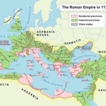

Welcome to the Math-Drills news and updates page. Here you can find out about new math worksheets and other information related to the website. To get notifications when new material is added, you can Sign-up for the email newsletter.
- Adobe Acrobat Reader Issue with Fillable WorksheetsFor anyone that uses Adobe Acrobat Reader with Math-Drills worksheets, there is currently a slight issue with how it handles PDF files with fillable form fields. Many Math-Drills worksheets include fillable fields, so students can complete worksheets on the screen without having to print. Even more have fillable fields for only the name, date and … continue reading
- Identifying Lines and Angles WorksheetsLines, Segments and Rays In elementary math, lines generally come in three types: line segments, rays and lines. It is important for students to recognize the visual cues, such as arrows and points, that will tell them the type of line they are looking at. A revised version of the identifying lines, segments and rays … continue reading
- Operations with Fractions WorksheetsMany new operations with fractions worksheets were added to Math-Drills in the fall. The new operations with fractions worksheets include a lot of new options plus a revision of older worksheets. The changes are detailed below. Fillable vs. Not Fillable Throughout the operations with fractions worksheets, you will find there are fillable and non-fillable options. … continue reading
- Operations with Integers Math WorksheetsMany of the worksheets for adding, subtracting, multiplying and dividing integers were recently updated on Math-Drills, and many new worksheet options were added. Check out the new operations with integers math worksheets now or continue reading for more details. As with other new math worksheets in the past few years, these ones were made to … continue reading
- Long Multiplication with Grid Support Worksheets UpdateAn important concept in successfully completing a long multiplication question using a pencil and paper method is to line up the numbers properly! Without a proper alignment, mistakes can be made and the final product will be affected. So, what do you do about students who have trouble lining up their numbers? Graph paper helps; … continue reading
- New and Improved Comparing Fractions WorksheetsA recent update to the comparing fractions worksheets on Math-Drills saw improvements to various aspects of the existing worksheets and various new worksheet options added. Comparing fractions involves deciding which of two fractions is greater in value or if the two fractions are equal in value. There are generally four methods that can be used … continue reading
- Division Facts with Long Division Symbol UpdateNew and Revised Division Facts Worksheets Most people in the English-speaking world are familiar with the long division symbol which is also known as the long division bracket. It is composed of a right parenthesis which separates the divisor on the left from the dividend on the right. Above the dividend is an overbar (aka … continue reading
- Multi-Digit Subtraction Worksheets RevisedA large number of multi-digit subtraction worksheets were updated to be fillable and savable with design improvements, and the subtraction page in general was revised for clarity and to group together similar worksheets. This also included removing some “legacy” subtraction worksheets which duplicated newer ones. The updated worksheets include almost all of the vertically arranged … continue reading
- Fillable Monthly and Yearly Calendars
 Happy 2023! In the new year, the calendars on Math-Drills were overhauled and fillable/savable versions were added. Now you can create your own custom calendars, save them and print them. Yearly Calendars All of the former yearly calendars were revised. They have a new layout, a new look and now include versions with a Monday … continue reading
Happy 2023! In the new year, the calendars on Math-Drills were overhauled and fillable/savable versions were added. Now you can create your own custom calendars, save them and print them. Yearly Calendars All of the former yearly calendars were revised. They have a new layout, a new look and now include versions with a Monday … continue reading - FIFA World Cup 2022 Group Stage Tracking Chart AnswersNow that the group stage of the 2022 FIFA World Cup is over, it is possible to present the answers to the Math-Drills Group Stage Tracking Chart. If you’ve been following along, there were some exciting games, and as usual, there were surprises and disappointments. Sixteen teams were eliminated and sixteen teams moved on to … continue reading
- Horizontally Arranged Arithmetic WorksheetsOver the past month, I’ve been replacing and adding horizontally arranged arithmetic worksheets to Math-Drills. The older ones are being replaced because the new ones are fillable and savable. This gives you an option of completing the worksheets on the screen or on paper. At the same time, I’ve reorganized some sections, so a few … continue reading
- Halloween 2022 Secret MessagesHappy October! For many, October is the month of Halloween math worksheets! Math-Drills includes many options for holiday themed math worksheets, and Halloween is no exception. A new type of Halloween math worksheet has appeared for 2022 which might seem familiar because it was also added for Saint Patrick’s Day and Easter earlier this year; … continue reading
- 2022 World Cup Soccer Tracking Charts
 The FIFA World Cup is coming this fall and it is a perfect opportunity for unique math activities. Math-Drills offered tracking charts in 2014 and 2018, and now you can access the improved 2022 versions! Following is a quick summary of the 2022 charts. Group Stage Tracking Chart The group stage starts with 32 teams … continue reading
The FIFA World Cup is coming this fall and it is a perfect opportunity for unique math activities. Math-Drills offered tracking charts in 2014 and 2018, and now you can access the improved 2022 versions! Following is a quick summary of the 2022 charts. Group Stage Tracking Chart The group stage starts with 32 teams … continue reading - Summer Missing Digits and July 4 Cartesian ArtThe summer missing digits math worksheets were updated to include more colorful clipart and to be fillable and savable. This update dispenses with the old monochrome single image and replaces it with a variety of interesting summer imagery. The worksheets are now fillable and savable which allows you to complete them in your browser and … continue reading
- Fraction Circles and Strips UpdatedI recently noticed that the fraction circles and fraction strips on the website showed some inconsistencies and needed improvement. If you aren’t familiar with these manipulatives, they are generally used for learning about fractions and often for comparing fractions. With some creativity, they can be used for a wide variety of activities, some of which … continue reading
- New Easter Math Worksheets 2022
 There are a few new math worksheets for Easter 2022 on Math-Drills. Following the popularity of the secret message and missing digits worksheets from previous holidays, these have now been added for Easter! The Easter page also has Cartesian art, an Easter egg map activity, arithmetic worksheets that follow the Easter Bunny’s path, word problems, and counting and patterning … continue reading
There are a few new math worksheets for Easter 2022 on Math-Drills. Following the popularity of the secret message and missing digits worksheets from previous holidays, these have now been added for Easter! The Easter page also has Cartesian art, an Easter egg map activity, arithmetic worksheets that follow the Easter Bunny’s path, word problems, and counting and patterning … continue reading - Saint Patrick’s Day 2022Math-Drills includes an entire page devoted to Saint Patrick’s Day math worksheets including patterning, comparing, counting, geometry, word problems and arithmetic. Two new additions to the page this year are described below. Secret Saint Patrick’s Day Messages Secret message worksheets are classic worksheets that I remember when I was a child many many (well, okay … continue reading
- Writing Numbers in Words Fillable WorksheetsIn general, we don’t often write large numbers in words, so is this a necessary skill for students to learn? With very little check/cheque writing going on these days, it may seem like the kind of skill that is unnecessary; however, when students say numbers, they are saying verbatim how a number would be written, … continue reading
- 99, 100 and 120 Charts Updated
 Recently, all of the 99, 100 and 120 charts on the Number Sense Worksheets page were updated. These types of charts are used for many purposes, but are often used for learning numbers and counting. After reading some compelling arguments about bottom-up counting charts, I made sure that each of the 99, 100 and 120 charts also had … continue reading
Recently, all of the 99, 100 and 120 charts on the Number Sense Worksheets page were updated. These types of charts are used for many purposes, but are often used for learning numbers and counting. After reading some compelling arguments about bottom-up counting charts, I made sure that each of the 99, 100 and 120 charts also had … continue reading - Cupid in Ancient RomeCupid, that Ancient Roman love God is now the subject of a Valentine’s Day math activity that involves a map, a distance chart, and some open-ended questions. If it sounds familiar, you have probably encountered Santa’s Route which is an activity that has been on the website for years, but got an overhaul for this past Christmas. … continue reading
- Scrooge’s Missing Digits and Cartesian ArtFirst of all, Happy December and a Merry Christmas to those who celebrate it. Thank you for subscribing to this email newsletter which gives me a chance to highlight new and interesting things on Math-Drills.com. I seem to have missed updating you about the Thanksgiving Cartesian Art worksheets, but it is worth a mention as … continue reading
- Happy Halloween 2021!It is already October and our scary math worksheets are already “flying off the shelves.” Here are a few highlights: Counting Halloween Objects in Various Arrangements: These worksheets were updated recently to a newer design and made fillable and savable, so they can be done online, but they are still very printable. There are versions for … continue reading
- Fillable Math Worksheets UpdateOver the past month, I’ve added quite a few fillable and savable math worksheets to the website and taken the opportunity to improve some of the worksheets along the way. There were a few bumps that required going back to the drawing board, but I am quite satisfied with the results, and I hope you … continue reading
- Fillable Math WorksheetsRecently, I’ve been exploring the idea of creating “fillable” PDF math worksheets to assist those who are teaching online or simply want to save on paper and toner/ink. In this context, fillable means a math worksheet that can be filled out on one’s computer with the fillable boxes already built-in. Picture this: You send a … continue reading
- New Student Page ButtonA new feature on the Math-Drills website allows teachers, parents, and other educators to download a PDF that only includes the question page for many of the website’s 58 thousand worksheets. The “Student” button will enable anyone to access an already “split” version of the worksheet that excludes the answer key. Previously, the “Download” button … continue reading